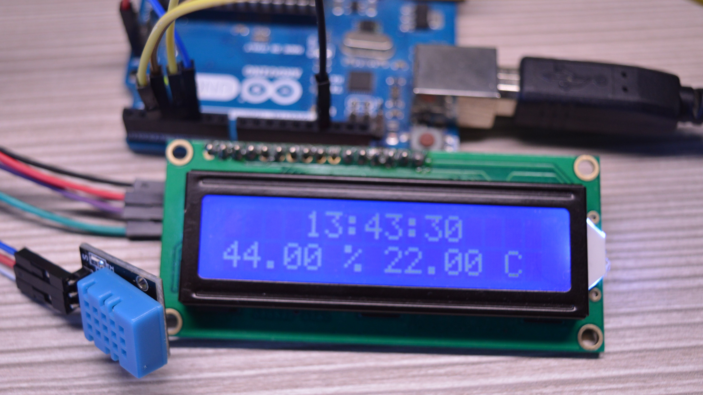

Projects
 In Progress
In Progress
Line Follower Robot
2025A basic autonomous robot that follows a black line on a white surface using infrared sensors. This project helped me understand sensor integration and basic control systems.
Arduino
Infrared Sensors
Control Systems
Robotics
Progress
20%

Completed
Arduino Weather Station
2025An advanced weather monitoring system using Arduino, featuring real-time data collection of temperature, humidity, pressure, and air quality. This project aims to create a comprehensive environmental monitoring solution with data logging and remote access capabilities.
Arduino
DHT22
BMP280
MQ135
IoT
Data Logging